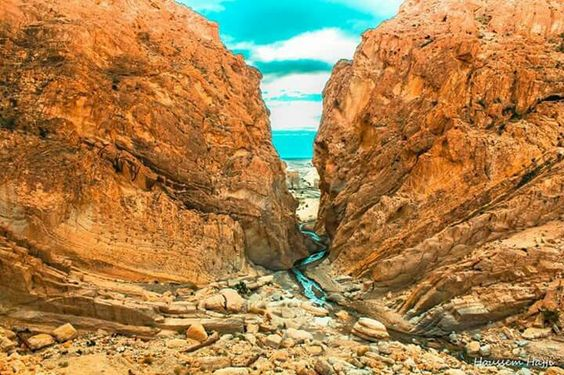
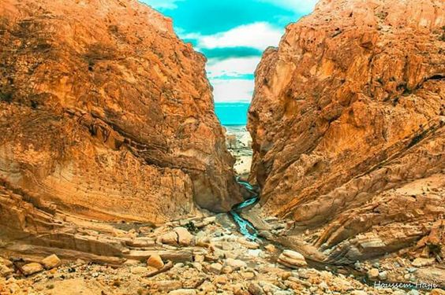

Gafsa, l'antique Capsa, est une ville du sud-ouest de la Tunisie et le chef-lieu du gouvernorat du même nom. Située sur la rive droite de l'oued Beyach, elle fait face à El Ksar sur la rive gauche. La municipalité abrite une population de 95 242 habitants selon le recensement de 2014 mais son agglomération, comprenant également El Ksar sur la rive gauche de l'oued Beyach, atteint quelque 130 000 habitants.

Capsa, le nom antique de la ville de Gafsa, a donné son nom à la culture épipaléolithique capsienne. Des ossements et des traces d'activités humaines remontant à plus de 8 500 ans ont été découverts dans cette région. Outre la fabrication d'outils en pierre et en silex, les Capsiens produisaient, à partir d'ossements, divers outils dont des aiguilles pour coudre des vêtements à partir de peaux d'animaux.

Gafsa s'est aussi spécialisée dans l'artisanat du tapis de laine, notamment le kilim et le margoum, dont certains types sont destinés à l'exportation14. À partir de 1998, l'Office national de l'artisanat a lancé une politique de soutien locale, sous la direction de l'artiste Hmida Ouahada qui avait entamé un travail de recherche et de création dès 1957.


 
